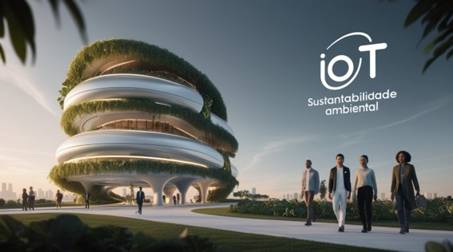

How the Internet of Things (IoT) is Shaping a Sustainable Future
What is IoT?
CRACKNELL, Joanna. How IoT technology enables sustainability. Tele2 IoT, 26 jan. 2024
Leonard.AI
IoT in Medicine
The initial use of IoT in medicine primarily focused on enhancing data collection and integrating it with electronic medical records. This enabled doctors to access patient information more quickly and share it with other professionals, optimizing diagnoses and treatments. The ability to connect sensors, diagnostic machines, and even implantable devices directly to hospital systems opened the door to a new era of connected healthcare.]
This transition gained momentum with the introduction of miniaturized sensors, advancements in wireless communication, and data analysis, allowing medical devices to become "smart" and connected. With the connectivity offered by IoT, surgeries became more precise, utilizing robotic technologies that depend on real-time networks to monitor the patient's condition during the procedure. These advancements allowed IoT to be incorporated not only into monitoring tools but also into advanced surgical equipment, such as surgical robots and holographic visualization devices.
The evolution of IoT in medicine was driven by the desire to reduce medical errors, improve the quality of care, and optimize efficiency in hospitals.
TACHIBANA, Shogo. The Holoeyes XR system for immersive surgical visualization. Medical Research Archives, v. 10, n. 7, p. 4045, 22 jul. 2022.
Leonard.AI
Robotic Surgeries
VAN NOORDEN, Richard. Robots are being used to carry out surgeries—what does that mean for patients? Nature, 30 nov. 2021.
Leonard.AI
Holographic Organs
VAN NOORDEN, Richard. Robots are being used to carry out surgeries—what does that mean for patients? Nature, 30 nov. 2021.
Leonard.AI
IoT and Health: Promoting Sustainability
Leonard.AI
1. Reduction of Travel
Remote monitoring through IoT, such as for chronic patients, eliminates unnecessary hospital visits. For instance, glucose data can be automatically sent to physicians, reducing travel and lowering carbon emissions.(TIEPOLO, 2023)
2. Energy Savings
Smart hospitals use sensors to adjust lighting and temperature based on need. In an empty operating room, energy is automatically conserved, reducing consumption and promoting energy efficiency.(NEXTO, 2022)
3. Reduced Material Waste
IoT sensors monitor the stock and validity of medications, preventing the waste of supplies like vaccines. During the Covid-19 pandemic, for example, smart refrigerators ensured that vaccines such as Pfizer's were stored at the correct temperatures, between -80°C and -70°C, avoiding losses and ensuring the doses' effectiveness during transport.(HILAB, 2021)
The Internet of Things (IoT) is significantly transforming the healthcare sector by promoting the reduction of travel, energy savings, and reduced material waste. These innovations not only improve the efficiency of healthcare services but also contribute to environmental sustainability, benefiting both healthcare professionals and patients.